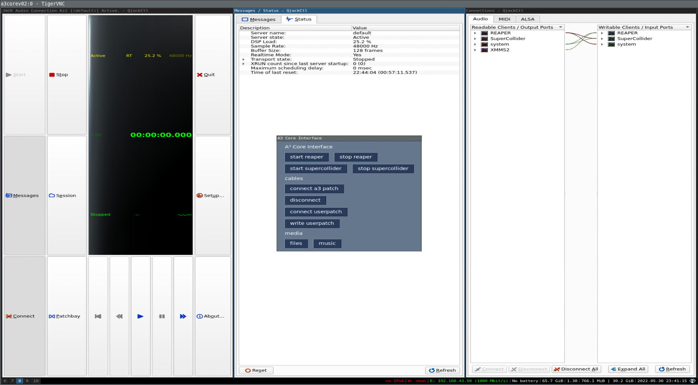
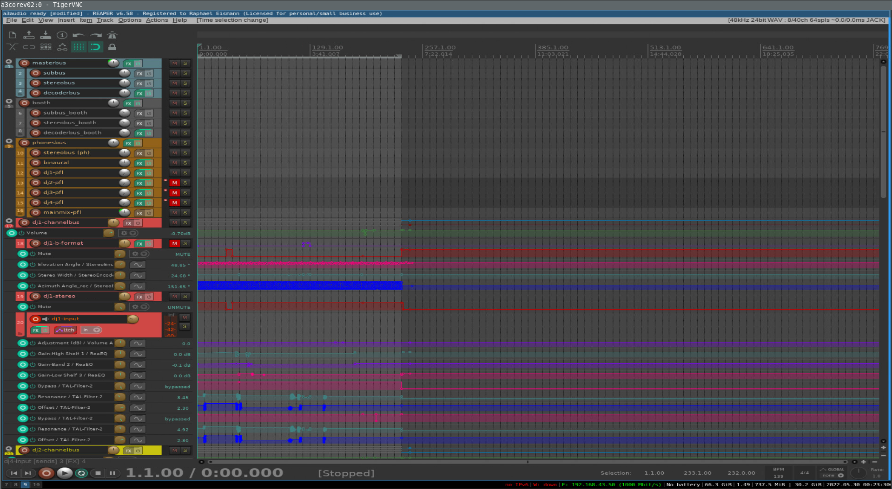
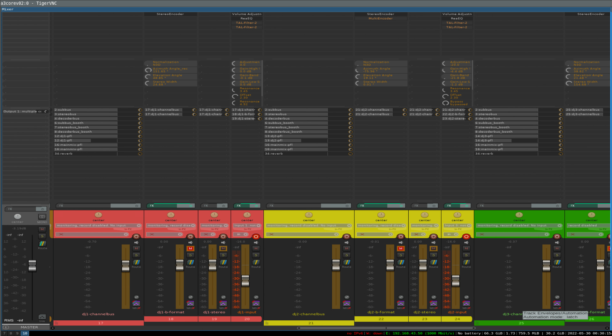
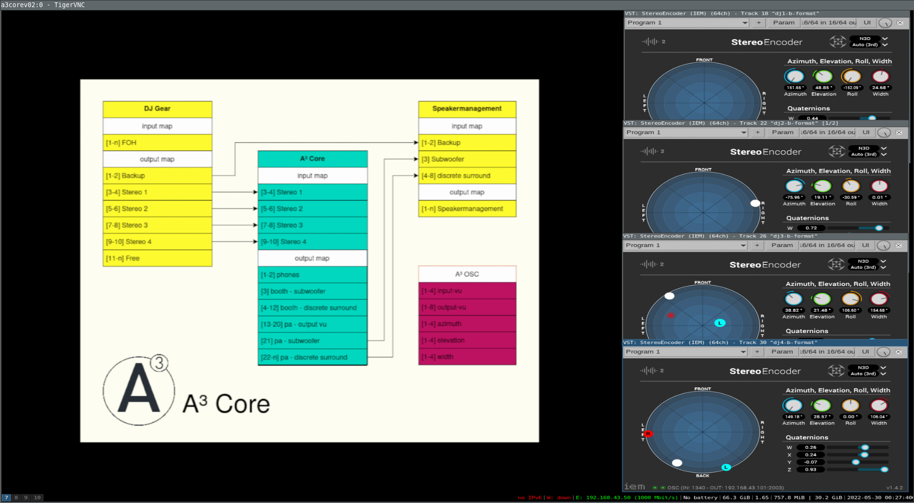

A³ User
A³ Developer
A³ Ressources
A³ Legal
A³ Core Configuration¶
PC¶
Since a wide range of archlinux compatible audio hardware is able to run A³ Core software, we describe our proved configurations in A³ Core Assembly.
SSD¶
SSD > 64GB
From scratch <-wip¶
Install Archlinux¶
Follow the guide from archlinux: Installation guide
Install realtimekernel¶
For low latency audio the archlinux-rt kernel is needed. Edit /etc/pacman.conf and add this section:
[realtime]
Server = https://pkgbuild.com/~dvzrv/repos/realtime/$arch
Then update the system and kernel with pacman -Syu linux-rt.
Some information: https://wiki.linuxaudio.org/wiki/lowlatency_deprecated
Configure audioengine¶
Follow the Professional audio guide: Professional audio guide
Root operations on A³ Core¶
Setup user¶
nano /etc/hostname
user-add -m aaa
groupadd realtime aaa
usermod -aG aaa aaa
usermod -aG wheel aaa
usermod -aG realtime aaa
usermod -aG users aaa
usermod -aG audio aaa
usermod -aG video aaa
chmod a+rw /dev/ttyACM0
passwd root
passwd aaa
Install depencies¶
pacman -Syu tree vim linux-rt realtime-privileges rtirq python3 python-osc jack2 qjackctl aj-snapshot iempluginsuite supercollider git python-pip i3-wm i3lock i3status htop ttf-dejavu xterm dmenu alsa-firmware alsa-utils alsa-tools sudo x11vnc xf86-video-dummy thunar tk feh xarchiver gvfs thunar-volman lxmusic gedit
pip install numpy pysimplegui
cd /home/aaa
git clone git@github.com:a3-audio/a3-system.git
Install reaper:
git clone https://aur.archlinux.org/yay.git
cd yay
makepkg -si
yay -s reaper rtapp
- Make a copy of the reaper project and put it in your home (I us a folder named runtime_reaper but its not important). Reaper will load the last used project.
- Edit reaper preferences and add vst path "/usr/lib/vst"
Install jmess (a program to save and restore jack audio connections)
https://github.com/jacktrip/jmess-jack
Install TAL Filter
https://tal-software.com/products/tal-filter
Copy files to corresponding system-folder:¶
.
├── etc
│ ├── rtirq.conf
│ ├── sudoers
│ ├── systemd
│ │ ├── network
│ │ │ └── a3.network
│ │ └── system
│ │ ├── a3xinit.service
│ │ ├── autologin@.service
│ │ ├── getty@tty1.service
│ │ ├── override.conf
│ │ └── x11vnc.service.d
│ │ └── override.conf
│ └── X11
│ ├── xorg.conf.d
│ │ └── 10-headless.conf
│ └── Xwrapper.config
└── home
└── aaa
├── a3_reaper_runtime
│ └── a3_reaper.RPP
├── .config
│ ├── i3
│ │ └── config
│ ├── jack
│ │ ├── esi_gigaport_ex.conf
│ │ └── minidsp_usbstreamer.conf
│ └── systemd
│ └── user
│ ├── a3_interface.service
│ ├── a3_jack_connections.service
│ ├── a3_osc_router.service
│ ├── a3_reaper.service
│ └── a3_vu_meter.service
├── userpatches
│ ├── userpatch_bck.jmess
│ └── userpatch.jmess
├── .vnc
│ ├── config
│ └── passwd
├── .xinitrc
└── .Xresources
Enable system services¶
systemctl enable autologin@
systemctl enable getty@tty1.service
systemctl enable a3xinit
systemctl enable rtirq
rtapp / rtirq¶
Type rtcards to find your sound card’s irq. Edit /etc/rtirq.conf described here:
http://www.audio-linux.com/html/realtime.html
Non root operations on A³ Core¶
Audiohardware¶
You could find out the right settings for your soundcard with qjackctl. Copy a configuration file from our repo to the following path and fill in your settings:
/home/aaa/.config/jack/your_soundcard.conf
Enable user services¶
systemctl --user enable a3_osc_router.service
systemctl --user enable jack@your_soundcard
Optional: To load audioengine in and fixed wires use this services:
systemctl --user enable a3_jack_connections.service
systemctl --user enable a3_reaper.service
systemctl --user enable a3_vu_meter.service
VNC Client¶
install tigervnc and execute a3core/./a3vnc.sh on your computer to connect to A³ Core. Make shure your client is in the same network listed in here:
Control screen¶

Sequencer screen¶

Mixer screen¶

Info screen¶

Supercollider¶
open scide
execute
Quarks.guicheck
NetLib